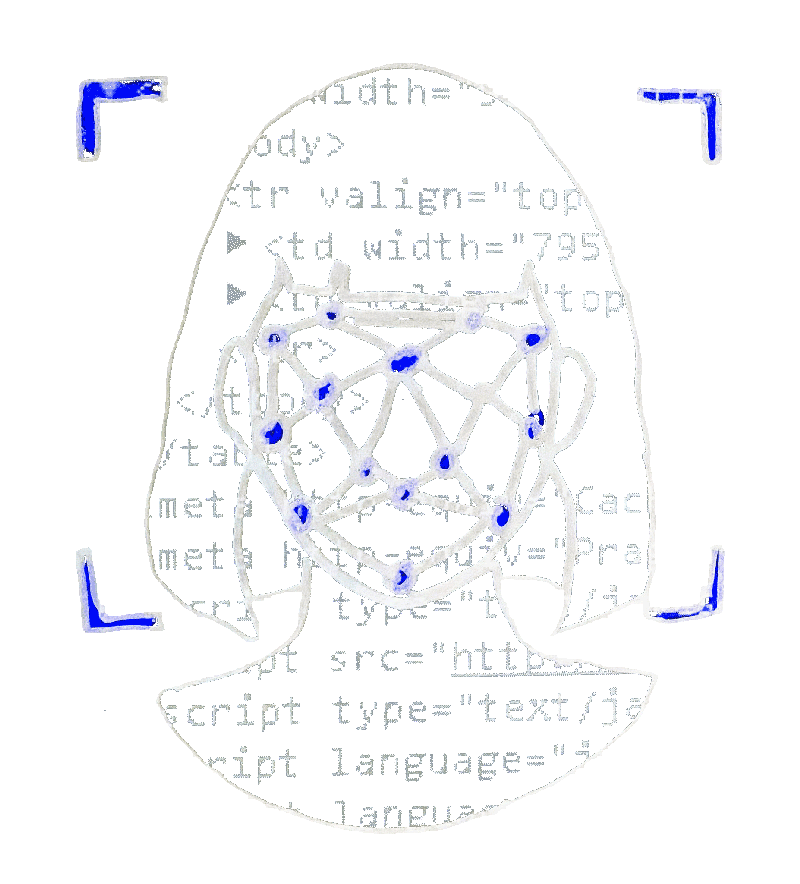

Center Marginalized Communities in Decision-Making
Interview with
Emmanuel Mauleon
Police and Technology Fellow, Policing Project, New York University School of Law
Emmanuel Mauleon
Police and Technology Fellow, Policing Project, New York University School of Law
Transcript
Emmanuel: I think marginalized communities are often the only voice showing that they need to be critical of these systems and say, "well, these technologies aren't all for good, the effects aren't all for good." Even if the police have the best intentions and are putting this in our communities to solve serious crimes like homicide, that doesn't mean that it's not gonna drift or one bad police officer is gonna take advantage of it. Marginalized communities are the ones that see the harm so regularly that they can cut through all of the promises that are like, "this is going to solve crime." And you're gonna be like, "yeah but what is this going to do when my kid gets accidentally thrown in the gang database, or when I get pulled over because I look like somebody, or because I'm driving the car that somebody lent me but they got a ticket that I'm getting pulled over for?" It's an unfortunate reality that the people that are the most at risk for having these technologies used against them are the only ones that are fighting against it.
Create Public Oversight
Interview with
Albert Fox Cahn
Founder and Executive Director, Surveillance Technology Oversight Project (S.T.O.P.)
Albert Fox Cahn
Founder and Executive Director, Surveillance Technology Oversight Project (S.T.O.P.)
Transcript
Albert: The gold standard for oversight of government surveillance technology comes from Oakland, CA where you have an Oakland privacy commission that is not only given information about how these surveillance tools are used, but it actually has to give permission any time the Oakland police department wants to install a new form of surveillance. I think it re-establishes the line between the public and the police making it clear that the civilians, the public, have to be the ones to decide how our communities are policed and how we are surveilled.

Create More Accountability
Interview with
Vanessa Gibson
New York City Council Member, District 16
Vanessa Gibson
New York City Council Member, District 16
Transcript
Andrew: What is the Public Oversight of Surveillance Technology POST Acts? Why do you support it?
Vanessa: The POST Act is a bill that’s been around since about 2016, and I am now the prime sponsor carrying the bills, for about two years now. And the reason why that bill is important is because the NYPD right now, uh, legally and through city charter, has no mandate to provide any level of oversight to the city council, or generally to New Yorkers about what type of technology and surveillance equipment they’re using. Anything from cell phone readers, license plate readers, towers, shot spotter, uh, sting rays, uh, the vans. Everything you can think of that they use, uh, in the intelligence bureau, right? In the counter terrorism unit. When you’re trying to fight against terrorism, and those that want to do harm in our city, against our people, I think it’s important the NYPD has every tool, but I also think it’s important that we should hold everyone accountable. We should have an open process where NYPD, or any other agency, not just putting NYPD on the radar, but any other agency that wants to use technology in surveillance, should be held accountable to the public. And so the POST Act is a reporting requirement bill that would provide the necessary, uh, requirements that we believe are important to understand what large purchases of technology the NYPD is making. We are also asking them to define, uh, using an impact and a racial policy, so that we understand the impact that that technology will have on New Yorkers. How are we using it? How are we storing data? Who has access to data, like district attorneys and public defenders? How long is data stored? How do we provide security measures so it’s not breached? And at the end of the day are we providing the safety but also the constitutional, um, requirements that are needed to support individuals’ civil rights?
Vanessa: The POST Act is a bill that’s been around since about 2016, and I am now the prime sponsor carrying the bills, for about two years now. And the reason why that bill is important is because the NYPD right now, uh, legally and through city charter, has no mandate to provide any level of oversight to the city council, or generally to New Yorkers about what type of technology and surveillance equipment they’re using. Anything from cell phone readers, license plate readers, towers, shot spotter, uh, sting rays, uh, the vans. Everything you can think of that they use, uh, in the intelligence bureau, right? In the counter terrorism unit. When you’re trying to fight against terrorism, and those that want to do harm in our city, against our people, I think it’s important the NYPD has every tool, but I also think it’s important that we should hold everyone accountable. We should have an open process where NYPD, or any other agency, not just putting NYPD on the radar, but any other agency that wants to use technology in surveillance, should be held accountable to the public. And so the POST Act is a reporting requirement bill that would provide the necessary, uh, requirements that we believe are important to understand what large purchases of technology the NYPD is making. We are also asking them to define, uh, using an impact and a racial policy, so that we understand the impact that that technology will have on New Yorkers. How are we using it? How are we storing data? Who has access to data, like district attorneys and public defenders? How long is data stored? How do we provide security measures so it’s not breached? And at the end of the day are we providing the safety but also the constitutional, um, requirements that are needed to support individuals’ civil rights?

Ban the use of Facial Recognition Technology by the NYPD
Interview with
Jonathan Stribling-Uss
Media Democracy Fund Technology Fellow, New York Civil Liberties Union
Jonathan Stribling-Uss
Media Democracy Fund Technology Fellow, New York Civil Liberties Union
Transcript
Jonathan: I do not think that the NYPD should be able to use facial recognition technology. I think that it violates the Constitution. I think that it's an overbroad search in terms of the way that it's being implemented. And I think that it puts whole communities in whole neighborhoods under constant surveillance without reasonable suspicion or a need for that sort of detailed surveillance.